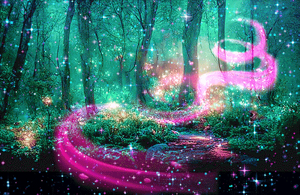

<!DOCTYPE html>
<html lang="en">
<head>
    <meta charset="UTF-8">
    <title>Everlost</title>

    <link rel="preconnect" href="https://fonts.googleapis.com">
    <link rel="preconnect" href="https://fonts.gstatic.com" crossorigin>
    <link href="https://fonts.googleapis.com/css2?family=Cinzel+Decorative:wght@400;700&display=swap" rel="stylesheet">

    <style>
        body {
            background-color: #121212; 
            color: #a855f7;
            font-family: sans-serif;
            text-align: center;
            padding-top: 50px;
        }
        h1 {
            font-family: "Cinzel Decorative", serif;
            font-weight: 400;
            font-style: normal;
        }
        a {
            color: #4da6ff;
            text-decoration: none;
            font-size: 1.5rem;
        }
    </style> </head>
<body>
    </body>
</html>

       <h1>Lunae Hills Forest</h1>


<p>It was a warm evening in Lunae Forest as you and the rest of the Seelie celebrated the mid-sommar awakening. A yearly event among Seelie kind celebrating the founding of the kingdom and the first king of seelie kind! You had just separated yourself from your friends and family to go for a walk on the forest past admiring the beauty of nature when you notice an unnatural occurrence. The forest, usually filled with the sounds of life, the chirping of songbirds, and cries of the bugs…all had given way to silence. Suddenly, a wave of exhaustion comes over you. You haven't a slight clue why but, the last thing that comes to you is a strange, sweet smell.</p>


<p><a href="crossroad.html">Wake up</a></p>
</body>
</html>